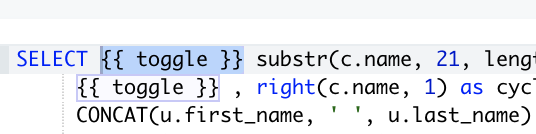

You can toggle filters (or whatever you want) on and off by creating a query as the source for a Query Parameter’s Query Based Dropdown List (QBDL) like so:
select '--' as value, 'false' as name
union all
select '' as value, 'true' as name
Which returns:
{kind=link}
And then in the query you’re applying it to just do this:
...
WHERE 1=1
{{ Condition Toggle }} AND table.column = value
And then connect the query parameter to the QBDL query you created:
{kind=link}
Then you just let the user toggle it on or off from the Query Parameter dropdown box, so if the report consumer chooses “disable [whatever] filter” it will insert double dashes to comment out the line with the condition and if the enable it, it leaves it uncommented.
Below is an example where I combined it with additional filters, so the user can decide to either filter by a state or account property. If they set Filter by State = True then it basically doesn’t do anything and the Account State filter gets applied. If they set it to false then it inserts the -- from the QBDL query and it comments the line out.
{kind=link}
I’ve also been using this to allow the user to toggle columns on and off:
